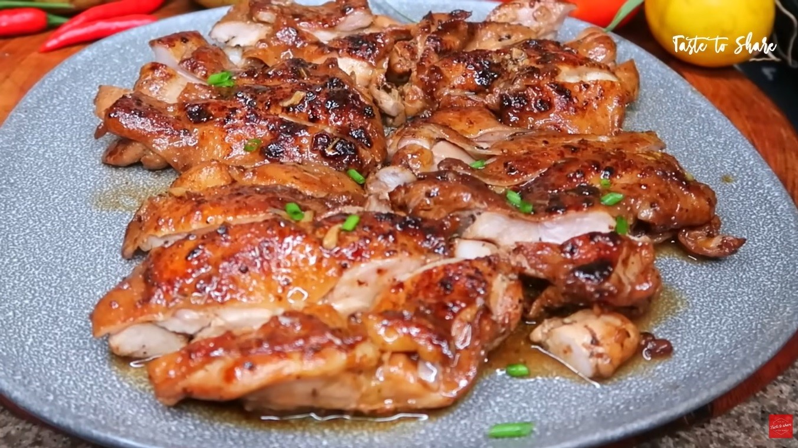

How to make a delicious chicken!

Soy marinated chicken
Tender and juicy chicken that is rich in flavors, easy to cook and not time consuming recipe
Ingredients
- 2pcs chicken quarter legs
- 1tsp ground black pepper
- 1Tbsp brown sugar
- 5 cloves of garlic
- 2 stalks of lemon grass
- 4Tbsp of soy sauce
- 1Tbsp of oyster sauce(optional)
- 2pcs calamansi juice
Procedure
- Marinate for atleast 1 hour
- Put small amount of oil on a heat pan
- Cook the chicken in low heat
- After halfway cooking pour the left over sauce on the pan
- Close the lid and simmer it until liquid is reduced
- Add 2Tbsp of butter
- Fry the chicken until cooked